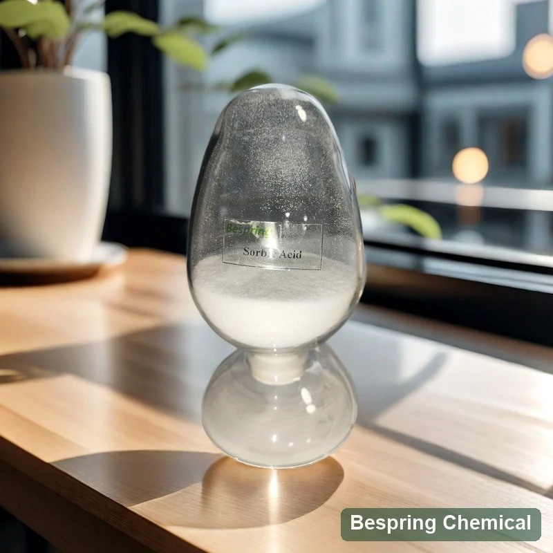
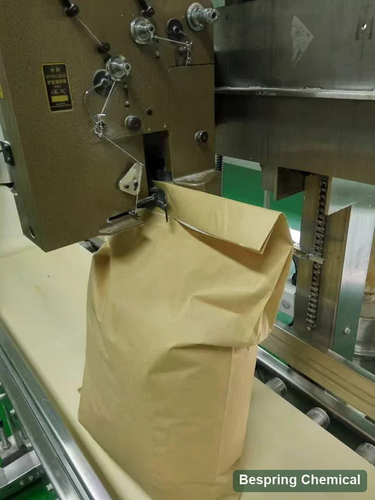

Définir l'alimentation et le marché
Fournir la catégorie d'aliments, le pH, les organismes cibles, la durée de conservation, la quantité et la destination.
Conservateur alimentaire · Acide sorbique (SA) · E200 / INS 200

Image du produit · confirmer la qualité et l'emballage lors de la commande
Partagez la qualité exacte, l'application, la quantité, l'emballage, la destination et les documents requis.
GradeQualité alimentaire, sous réserve de la qualification de source exacte
SpécificationDemander le document de qualité offert
EmballageConfirmé dans l'offre spécifique à la source
Preuves par lotsDemander des résultats spécifiques aux lots
Réponse directe du produit
L'acide sorbique, également appelé acide 2,4-hexadiénoïque, est une seule substance de conservation: CAS 110-44-1, formule C6H8O2, INS 200 et E200. Les Monographie de l'acide sorbique JECFA donne un poids de formule de 112.12 g/mol et décrit les aiguilles incolores ou la poudre blanche à écoulement libre.
Cette page traite de l'acide sorbique sans teneur alimentaire, plutôt que du sorbate de potassium ou d'une préparation enrobée. Acceptez la spécification de qualité offerte et ses méthodes avant l'achat; un lot d'ACO signale ensuite les résultats du lot.
Liste de contrôle pour les achats
Comparer la qualité offerte, les exigences de demande et les conditions commerciales avant de demander un échantillon ou de passer une commande.
Fournir la catégorie d'aliments, le pH, les organismes cibles, la durée de conservation, la quantité et la destination.
Demander l'identité, la méthode d'essai, les besoins en particules, les impuretés, la microbiologie et la documentation de lot.
Évaluer les effets de pâte ou de pâte, le goût, la distribution, l'emballage et la durée de conservation réelle.
Comparer sorbate de potassium E202 Le sel a un poids et une composition moléculaires différents; comparez la base active acide sorbique et les règles du marché plutôt que d'envisager une substitution à masse égale.
Examen de la demande
Il s'agit de zones de dépistage de la formulation, et non d'approbations universelles, de recommandations posologiques ou de résultats garantis.
Évaluer le contrôle des moisissures aux côtés de la pâte et des aliments finis pH, activité de l'eau, fermentation, profil de cuisson et emballage. Vérifier la compatibilité de levure de boulanger avant l'addition directe de pâte (recherche sur la croissance de levures); une qualité spécialisée ou enduite nécessite ses propres essais de libération et d'épreuve.
Vérifier la dispersion, l'utilisation autorisée, la compatibilité de la culture, la saveur et l'emballage dans le fromage ou le produit laitier sélectionné.
Tester la dispersion et la distribution des conservateurs à travers les phases de l'eau et des graisses. Évaluer le pH d'équilibre, la transformation, les conditions d'emballage et l'exposition après ouverture dans la sauce ou la vinaigrette.
Confirmer la distribution granulométrique, le risque de ségrégation, l'uniformité des mélanges et l'essai actif d'acide sorbique.
Sélection technique
Le pH affecte l'équilibre entre les ions acide et sorbate non dissociés, mais les conditions d'organisme et de nourriture sont également importantes. Recherche primaire sur l'acide sorbique et le pH a trouvé des contributions des deux formes dans ses conditions d'essai; il n'établit pas de dose alimentaire universelle ou d'allégation de contrôle bactérien.
L'acide sorbique n'est que légèrement soluble dans l'eau. D'accord sur la forme des particules, le mélange et le point d'addition, puis vérifier la dissolution ou la dispersion à la température et à la concentration réelles.
Planifiez des essais de produits finis contre les levures et les moisissures de gâtement pertinentes. Consignez le pH, l'activité de l'eau, l'hygiène des procédés, les résultats microbiens, la qualité sensorielle et les conditions d'emballage final au cours de la période d'entreposage prévue.
Confirmer la catégorie d'aliments, la fonction autorisée, la teneur maximale, la base de comptage et l'étiquette dans chaque marché. Ne traitez pas une dose journalière acceptable exprimée par kilogramme de poids corporel comme un taux d'addition alimentaire.
Documentation technique privée
La spécification commerciale de qualité offerte est fournie par le biais des ventes. Indiquer la norme et l'édition requises, les limites d'impuretés et les exigences de forme physique. Utilisez la liste de contrôle ci-dessous pour comparer les méthodes ainsi que les valeurs; les critères de norme publique ne sont pas une garantie de produit Bespring ou une ACO par lot.
Sur les petits écrans, balayez la table; les utilisateurs de clavier peuvent la focaliser et utiliser les touches fléchées.
Balayez l’écran ou utilisez le clavier pour consulter toutes les colonnes
| Contrôle | Confirmer avec la note offerte | Pourquoi c'est important |
|---|---|---|
| Identité et forme | Acide sorbique E200/INS 200, CAS 110-44-1; distribution et apparence des particules | Distinguer l'acide libre des sels de sorbate et des mélanges enduits |
| Essai | Plage d'acceptation, méthode et base de déclaration en tant que tel / sec / anhydre | Comparer le contenu actif sur la base convenue |
| Eau et résidus | Méthode de l'eau; méthode de l'ash sulfaté et préparation de l'échantillon | Karl Fischer eau n'est pas interchangeable avec perte au séchage |
| Panneau de pureté | Limites de Pb, d'As, de Hg et de Zn séparées, résultats et limites de déclaration; méthode de l'aldéhyde | Un total de métaux lourds hérités n'est pas un résultat spécifique à un élément |
| Propriétés du processus | Méthode de la gamme de fusion, conditions de dissolution/dispersion et critère de couleur thermique | Tests de correspondance au mélange, au processus alimentaire et à la norme nommée |
| Documents et fourniture | Spécification/DTS, FDS, ACO représentatif et lot; déclarations de source; emballage et stockage | Vérifier la révision, le lot, la portée du certificat et les conditions commerciales réelles |
Demander la spécification ou la SDT, la SDD, les méthodes d'analyse, l'ACO représentatif et l'ACO par lots.
Vérifier la sécurité alimentaire, la qualité, l'origine, l'allergène, le casher, le halal et les certificats de site pour la qualité exacte et la source.
Revoir la Acide sorbique de la FAO et de l ' OMS, puis appliquer les règles actuelles du marché de destination aux aliments finis.
Note de conformité: U.S. 21 CFR 182.3089 Liste de l'acide sorbique comme GRAS lorsqu'il est utilisé selon les BPF. Il s'agit d'une condition d'utilisation, et non d'une approbation par la FDA d'un fournisseur ou d'un lot.
Référence du JECFA: dosage ≥99,0% sur base anhydre, eau ≤0,5% par Karl Fischer, cendres sulfatées ≤0,2%, aldéhydes ≤0,1% exprimés en formaldéhyde et plomb ≤2 mg/kg. Son intervalle de fusion est de 132–135°C avec la préparation de l'appareil indiquée. Ces critères s'appliquent à l'acide sorbique; vérifiez les méthodes complètes dans monographie originale.
Les limites d'impuretés de l'UE diffèrent: Règlement (UE) 2024/2597, annexe II fixe l'arsenic, le plomb et le zinc à ≤0,1 mg/kg chacun, et le mercure à ≤0,01 mg/kg pour E200; ces modifications de pureté s'appliquent à compter du 27 avril 2025, sous réserve de ses dispositions transitoires. Une limite de plomb du JECFA ou un certificat d’analyse (COA) plus ancien n'établit pas la conformité avec ces limites plus basses de l’UE. Demander des résultats propres à chaque élément, avec des limites de déclaration adéquates pour la spécification requise, et examiner les règles consolidées actuelles.
Stockage et manutention
Référence du processus d'emballage

Questions de l'acheteur
L’acide sorbique est l’acide libre, E200 / INS 200 ; le sorbate de potassium est son sel potassique, E202 / INS 202. Le sel est plus soluble dans l’eau et sa masse moléculaire diffère. Comparez le pH de formulation, le mode d’incorporation, la base d’acide sorbique actif et les conditions du marché plutôt que de les remplacer gramme pour gramme.
L'acide sorbique peut affecter la croissance de la levure, et la poudre ordinaire n'établit pas le comportement de libération d'un grade spécialisé ou enduit. Comparer la séquence d'addition, le pH de la pâte, la fermentation, le profil de cuisson et la durée de conservation du conditionnement fini avant l'approbation.
La concentration, la température, la taille des particules et le mélange affectent la dissolution et la distribution. Évaluer la formule actuelle et considérer une voie de sel ou d'addition appropriée au besoin; ne pas supposer une substitution à dose égale.
Non. Confirmer les catégories, les conditions et les exigences en matière d'étiquetage des aliments destinés au marché. Valider les organismes pertinents, le pH, l'activité de l'eau, le traitement, l'hygiène et l'emballage final.
D'accord sur les limites actuelles de qualité offertes, les méthodes complètes et les bases de déclaration, puis de comparer les résultats spécifiques au lot. L'eau distincte résultant de la perte lors du séchage et un plomb spécifique à un élément résultent des métaux lourds en tant que Pb. Pour l'approvisionnement de l'UE, il est possible que les limites inférieures de qualité As, Pb, Hg et Zn introduites par le règlement (UE) 2024/2597 ne soient pas suffisamment élevées.
Fournir la norme alimentaire et l'édition, l'application, le pH final et l'activité de l'eau, lorsqu'ils sont connus, la voie d'ajout/de transformation, les exigences en matière de particules, les essais critiques, la quantité, l'emballage, la destination, l'Incoterm et le calendrier de livraison.
Contenu mis à jour 5 octobre 2026 · Références techniques: JECFA FAO/OMS, eCFR U.S. et l'amendement E200 de l'UE.
Approvisionnement connexe
Parcourez le portefeuille complet et les dossiers de produits techniques disponibles.
Discutez des spécifications actuelles, de la disponibilité des documents, des exigences de l'échantillon et des conditions commerciales.
Examiner l'approvisionnement et le soutien à l'exportation pour l'approvisionnement international en ingrédients.
Pour la sélection des conservateurs, comparez sorbate de potassium soluble dans l'eau, acide sorbique encapsulé pour les essais de boulangerie contrôlée par libération et propionate de calcium pour le contrôle des moisissures de boulangerie. Ce sont des ingrédients ou des préparations différents, pas des substituts à dose égale. Guide d'application des ingrédients alimentaires relie les exigences de conservation à d'autres fonctions de formulation.
Approvisionnement fondé sur les spécifications
Communiquez la norme alimentaire, l’application, le pH final, l’activité de l’eau si connue, le point d’ajout et les microorganismes d’altération ciblés. Incluez les exigences particulaires, les essais critiques de pureté, la quantité, le conditionnement, la destination, l’Incoterm et les besoins de livraison afin d’évaluer la qualité proposée.
Dites-nous votre marché de qualité et de destination afin que nous puissions confirmer quels documents sont disponibles pour votre commande.
Une référence externe n'est pas un certificat de lot ou une spécification de produit Bespring.